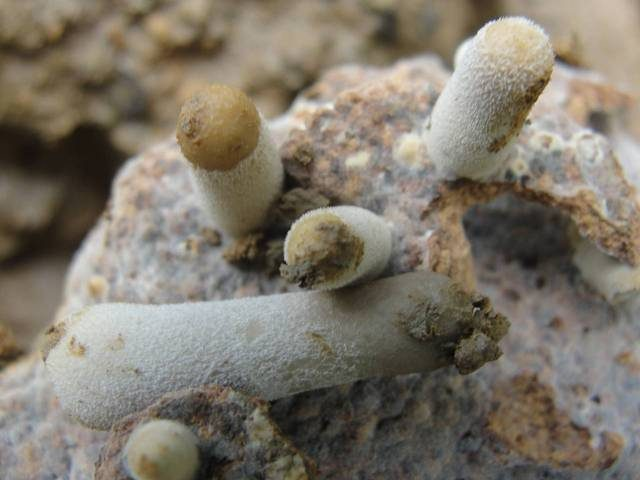

दीमक छत्ताTermite Mushroom
Termitomyces heimii · Lyophyllaceae · FNG-0001

- Scientific name
- Termitomyces heimii Natarajan
- Family
- Lyophyllaceae
- Hindi
- दीमक छत्ता / बरसाती छाता
- Status here
- native
- IUCN
- not evaluated
When to look कब देखें
Expected mainly in June, July, August.
दीमक छत्ता / Termite Mushroom
Termitomyces heimii Natarajan — Lyophyllaceae
दीमक छत्ता — मानसून की पहली बारिश के बाद दीमक के टीले से निकलने वाला पहला मशरूम — जो सिर्फ दो दिन तक रहता है। गाँव के लोग इसे पीढ़ियों से खाते आए हैं, लेकिन इसके पीछे जो विज्ञान है, वह अद्भुत है और लगभग अज्ञात है।
Quick Identification शीघ्र पहचान
| Feature | Description |
|---|---|
| Cap Size & Shape | Large cap (8–20 cm wide), conical when young, flat and wavy at margins when old |
| Perforatorium | Sharp, rigid, spike-like projection (1–3 cm long) at the exact cap centre |
| Colour | Creamy white to pale tan, turning darker greyish-brown at the centre with age |
| Gills | Pure white, crowded, and free (unattached to the stem) |
| Stipe (Stem) | Thick, white, solid (8–15 cm long above ground) with a long underground pseudorrhiza |
| Association | Always found emerging directly near active soil mounds of Odontotermes termites |
Field tip: Look for a large, white, spiky-capped mushroom emerging from or near a termite mound. The rigid central spike (perforatorium) on the cap and the long underground false root (pseudorrhiza) are completely diagnostic. Field mushroom (Agaricus campestris) lacks the central spike and does not grow near termite mounds.
Morphology आकृति विज्ञान
| Feature | Measurement |
|---|---|
| Cap (pileus) diameter | 8–20 cm |
| Stipe height (above ground) | 8–15 cm |
| Stipe diameter | 20–30 mm |
| Pseudorrhiza length | 30–60 cm |
| Spore dimensions | 7–9 × 4–5 µm |
Cap (pileus): 8–20 cm diameter. Shape changes with age: conical and umbonate when fresh, expanding to broadly convex, eventually flat or wavy at margins. Surface smooth, dry, creamy white to pale tan; centre darkens to greyish-brown with age. Margin becomes irregular and may split.
Perforatorium: A rigid, pointed projection at the cap centre — extends 1–3 cm. Present throughout the cap's life. This is a Termitomyces genus character — no other mushroom has it.
Gills: White, crowded, free (not attached to stem). Smell mild and pleasant.
Stem (stipe): 8–15 cm above ground, 2–3 cm thick, white, solid when young, fibrous. Below ground it continues as a pseudorrhiza — a tough cord-like false root that can extend 30–60 cm down to the termite fungus garden.
Spore print: White to very pale pink.
Flesh: White, firm; does not discolour when cut.
हिंदी: ताज़ा अवस्था में शंक्वाकार, बाद में चपटा। टोपी क्रीमी-सफेद, बीच में काँटा। गिल्स (पत्तियाँ) सफेद, घनी। तना ज़मीन के ऊपर 8–15 सेमी, लेकिन नीचे 30–60 सेमी तक जाता है — सीधे दीमक के घर तक।
The Termite–Fungus Mutualism दीमक-कवक का अद्भुत रिश्ता
This is the most important ecological story in this entry.
What termites do: Certain termites — primarily Odontotermes species, which build the tall earthen mounds common across UP — do not eat plant material directly. Instead, they collect dead plant matter (grass, wood, leaf litter), bring it underground, and cultivate Termitomyces on it. The fungal mass, called a fungus comb or fungus garden, fills special chambers inside the mound.
What the fungus does:
Termitomyces breaks down cellulose and lignin — the tough structural materials in plant cell walls that most organisms cannot digest. The fungus essentially pre-digests the plant material, and the termites then eat both the partially digested substrate and the fungal nodules (called mycotêtes).
The fruiting event: The mushroom cap that appears above ground is the Termitomyces fruiting body — its reproductive stage. It emerges only once a year, triggered by the first monsoon rains and the resulting humidity and temperature drop. The mushroom disperses spores, which may colonise new termite mounds or be brought underground by termites themselves.
The pseudorrhiza: The underground stem extension connecting the cap to the fungus garden can be 30–60 cm long. When you pull a Termitomyces from the ground, this long white cord comes with it. It is not a root — fungi do not have roots — but a mycelial cord connecting the cap to the subterranean colony.
हिंदी — दीमक और मशरूम का रिश्ता:
पूर्वी UP के खेतों में जो बड़े-बड़े मिट्टी के टीले दिखते हैं, वे दीमक (Odontotermes) के घर हैं।
ये दीमक घास और लकड़ी को सीधे नहीं खाते। वे इसे ज़मीन के नीचे लाकर Termitomyces कवक को उगाते हैं — और फिर उस कवक को खाते हैं।
यह खेती है। दीमक लाखों साल से कवक उगाते आ रहे हैं।
जब मानसून आता है, तो इस कवक का फल (मशरूम) बाहर निकलता है। यही वह मशरूम है जिसे गाँव के लोग तोड़ते हैं।
जो लम्बी सफेद जड़ दिखती है जब आप इसे उखाड़ते हैं — वह जड़ नहीं है, बल्कि एक धागा है जो सीधे नीचे दीमक के बगीचे तक जाता है।
Ecological Role पारिस्थितिक भूमिका
Decomposer via termite system: The Termitomyces–termite complex is one of the most efficient decomposers of dead plant material in tropical and subtropical ecosystems. In eastern UP's agricultural landscape, termite mounds are major sites of organic matter breakdown — returning nutrients to the soil.
Nutrient cycling: The system breaks down cellulose and lignin that would otherwise accumulate. Fields and field margins near active termite mounds often have better soil structure and organic matter cycling.
Food source: Collected and eaten by humans across eastern UP — a culturally important seasonal food, available for only 2–4 days per year per mound.
Prey for animals: Mushrooms attract insects, slugs, and small mammals. Emerging caps are grazed by deer, cattle, and rodents. Birds (especially mynas and crows) peck at caps for associated insects.
हिंदी: दीमक-कवक तंत्र पूर्वी UP की मिट्टी को स्वस्थ रखने में महत्वपूर्ण भूमिका निभाता है। यह मृत पौधों को तोड़कर मिट्टी में पोषक तत्व वापस लाता है। इसके अलावा यह मनुष्यों, कीड़ों और जानवरों का भोजन है।
Phenology मौसम और समय
- Season: Strictly monsoon — first heavy rains of June or July
- Window: Extremely brief. A single mound may produce mushrooms for 2–5 days only
- Trigger: First sustained monsoon rain + soil temperature drop to ~28–30°C
- Time of day: Caps emerge and expand overnight; best collected at dawn
- Disappears: Caps deliquesce (melt) rapidly — within 48–72 hours of emergence, even sooner in heat
- Frequency: A productive mound may fruit 1–3 times per monsoon season if conditions are right
हिंदी: सिर्फ मानसून में — जून या जुलाई की पहली बड़ी बारिश के बाद।
एक टीले पर सिर्फ 2–5 दिन तक मिलता है।
सुबह जल्दी तोड़ना चाहिए — दोपहर तक गलने लगता है।
एक मौसम में एक टीला 1–3 बार दे सकता है।
Human Use मानव उपयोग
Edible and prized: Termitomyces heimii is one of the most valued wild edible mushrooms in rural India. It is eaten across UP, Bihar, Madhya Pradesh, Odisha, and tribal areas of central India. Preparation: usually a dry sabzi with onion, garlic, and spices; also added to dal.
Collection practice: Villagers who know the mound locations return to them each year. The pseudorrhiza is cut at ground level rather than pulled out — this preserves the fungus garden underground and allows the mound to fruit again.
Commercial potential: In some areas, sold in local markets during peak monsoon. Not yet commercially cultivated — it cannot be easily grown without the termite colony.
हिंदी: यह खाने योग्य और स्वादिष्ट है। इसे सब्ज़ी की तरह बनाते हैं।
समझदारी से तोड़ें: जड़ को काटें, खींचें नहीं — तो अगली बार भी उसी टीले से मिलेगा।
बाज़ार में भी बिकता है कुछ जगहों पर।
Distribution वितरण
Global range: Widespread in tropical and subtropical regions of South and Southeast Asia, particularly where fungus-growing termites are present.
In India: Common in central, southern, and eastern India, including the Indo-Gangetic plains, Vindhyan hills, and deciduous forest zones.
In Uttar Pradesh: Distributed across central and eastern districts, particularly in agricultural fringes and woodlands that support Odontotermes colonies.
In Basti district / eastern UP: Frequently found near old, established termite mounds in orchard margins, roadsides, and uncultivated fields.
Range notes: No significant range changes documented; its occurrences are highly localized to individual termite mound locations.
Research Questions शोध प्रश्न
Anyone can investigate these | कोई भी इन प्रश्नों की जाँच कर सकता है
- How many mounds in your village produce mushrooms? / आपके गाँव में कितने टीलों पर मशरूम निकलते हैं? — Map every mound that fruits. Some mounds never produce mushrooms — why?
- How many hours after rain do they emerge? / बारिश के कितने घंटे बाद निकलते हैं? — Note the time of the rain and the time of first emergence. Do this for 3 monsoon events.
- How long does a single cap last? / एक टोपी कितने घंटे तक रहती है? — Mark one cap with a nearby stone and check every 12 hours.
- Does the same mound fruit every year? / क्या वही टीला हर साल देता है? — Keep a record over 3 years. Some mounds stop fruiting — does this relate to termite colony health?
- What eats the caps before people collect them? / लोगों से पहले क्या खाता है? — Watch a newly emerged cap from a distance at dawn and record visitors.
Similar Species मिलती-जुलती प्रजातियाँ
| Species | How to tell apart | हिंदी |
|---|---|---|
| Termitomyces clypeatus | Smaller cap (5–10 cm); perforatorium shorter; also edible | छोटा; भी खाने योग्य |
| Termitomyces microcarpus | Very small (1–3 cm); grows in clusters of dozens; also from termite mounds | बहुत छोटा; झुंड में |
| Agaricus campestris (Field mushroom) | No perforatorium; no termite mound; bruises yellow or red | काँटा नहीं; टीले पर नहीं मिलता |
| Macrolepiota spp. (Parasol mushroom) | No perforatorium; large shaggy scales on cap; ring on stem | काँटा नहीं; तने पर छल्ला |
Field rule: If it is large, white, growing near a termite mound, and has a sharp spike at the centre of the cap — it is a Termitomyces. The spike (perforatorium) is unique to this genus and cannot be confused.
Taxonomy & Classification वर्गीकरण
Original description. Termitomyces heimii was described by K. Natarajan in 1979 in Kavaka 7: 69. Type locality: Madras (Chennai), India. The genus name Termitomyces refers to its obligate relationship with termites, and the species epithet heimii honors the French mycologist Roger Heim, a pioneer in the study of termite-associated fungi.
Subspecies. Monotypic — no subspecies are currently recognised.
Family and order placement. Belongs to the order Agaricales, family Lyophyllaceae. Lyophyllaceae is a family of gilled mushrooms within the order Agaricales, containing species that are saprotrophic, parasitic, or mutualistic (such as the termite-associated Termitomyces).
Phylogenetic notes. The genus Termitomyces forms a monophyletic group obligately symbiotic with termites of the subfamily Macrotermitinae. Molecular data shows co-evolutionary patterns between termites and their cultivated fungi.
IUCN status rationale. This species has not been formally assessed by the IUCN Red List. As a wild-collected edible mushroom that fruits predictably in association with termite colonies, the regional population remains locally stable but is sensitive to termite mound destruction.
Photo Gallery फोटो गैलरी
Atlas Connections संबंधित प्रजातियाँ
- Small Termite Mushroom — companion species on same termite mounds; smaller cap (5–10 cm), darker colour (FNG-0002)
- Mound-building Termite — obligate cultivator; Odontotermes obesus grows this fungus in mound chambers; without termites, no termite mushrooms (SFL-0001)
References संदर्भ
- Natarajan, K. (1979). Termitomyces heimii sp. nov. from India. Kavaka, 7: 69–72.
- Otieno, J.N. et al. (2016). Ethnomycological knowledge and use of Termitomyces in Africa and Asia. Journal of Ethnobiology and Ethnomedicine, 12(1): 22.
- Rouland-Lefèvre, C. (2000). Symbiosis with fungi. In: Abe, T. et al. (eds.) Termites: Evolution, Sociality, Symbioses, Ecology, 289–306. Kluwer Academic, Dordrecht.
- Aanen, D.K. et al. (2002). The evolution of fungus-growing termites and their mutualistic fungal symbionts. Proceedings of the National Academy of Sciences, 99(23): 14887–14892.
- Zoological Survey of India / Botanical Survey of India — Fauna and Flora of Uttar Pradesh.
- GBIF Occurrence Data — Termitomyces heimii, India (2026).
Source file: species/fungi/mushrooms/termite_mushroom.md